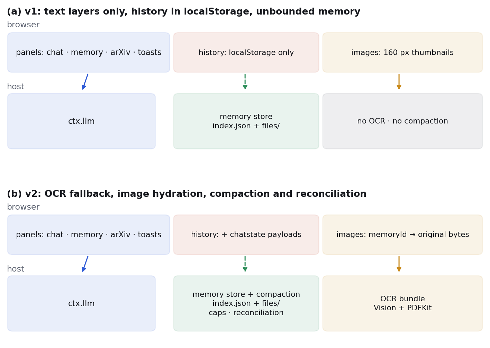
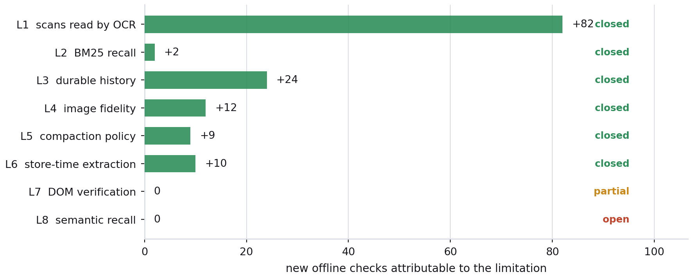
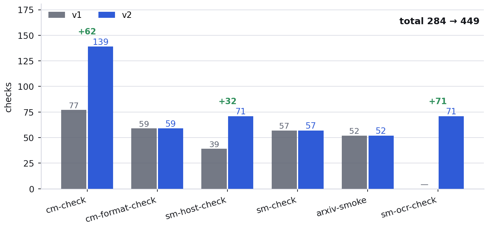
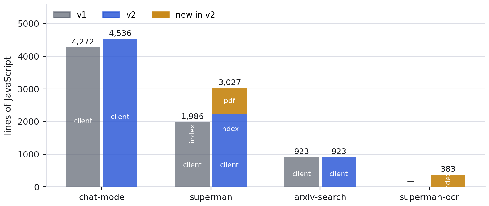
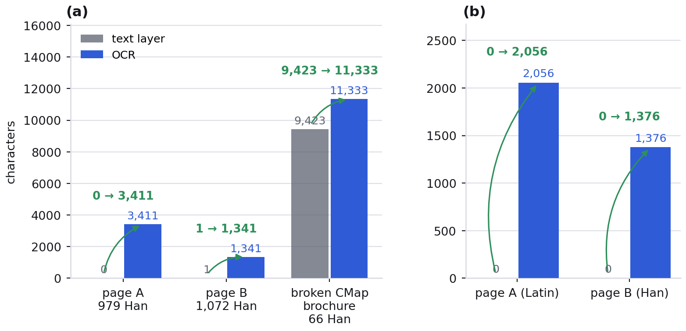
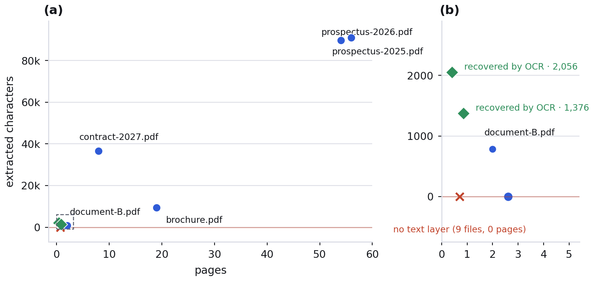
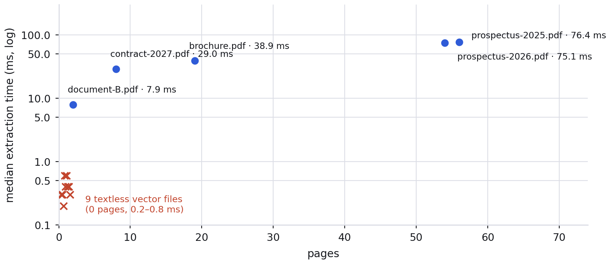
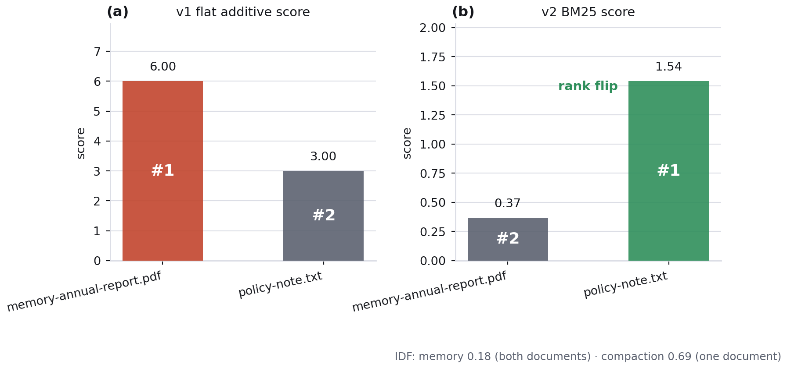
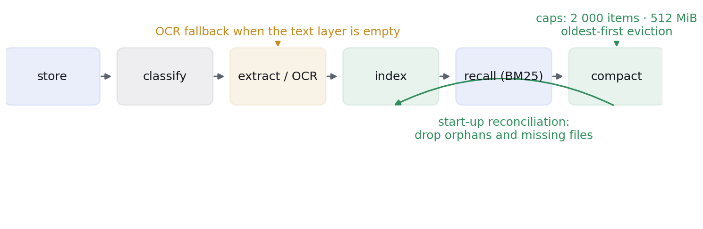

这套插件给 DeepSeek Harness 加了三个能力：仿 ChatGPT 的 Chat 模式、会自动归类并在两个模式思考时被回忆的 Superman 记忆体、以及把 arXiv 论文归档进记忆体的 文献捕获。全部以官方插件机制安装，不改 Harness 源码。两篇论文记录了它的构建，以及随后对已记录局限的系统性关闭。 Three plugins for DeepSeek Harness: a ChatGPT-style Chat mode, a Superman memory that classifies every upload and is recalled while either mode thinks, and literature capture that archives arXiv papers into that memory — installed through the harness's own plugin mechanism, without forking it. Two papers document the build and the systematic closing of its documented limitations.
最新论文（v2，19 页）The current paper (v2, 19 pages)
Closing the Documented Limitations of an Agent-Harness Memory Extension
摘要Abstract
智能体编码框架的记忆通常止步于单次会话。我们此前为 DeepSeek Harness 构建的 Superman 扩展套件补上了这一缺口，并如实列出八条局限。本文报告随后的「关闭局限」工作：六条已关闭，一条部分关闭，一条未关闭。扫描件经本机 macOS Vision OCR 恢复为可回忆文本，一页文本层为 0 字符的栅格化页面被识别出 3 411 个字符、其中 979 个汉字。回忆打分改为 BM25（k1 = 1.2、b = 0.75）。每轮对话另写一条上限 7 900 字符的可还原载荷，记忆体在启动时把会话合并回列表。历史图片凭记忆条目 id 取回原始字节。记忆体加入 2 000 条与 512 MiB 双上限、最旧优先淘汰、启动对账与 prune。面板上传与 Harness 捕获的 PDF 在入库时自行抽取文本。离线检查由 284 项增至 449 项，代码由 7 187 行增至 8 869 行。DOM 测试与语义回忆未完成，本文说明其边界。Agent harnesses accumulate capability faster than they retire their documented weaknesses, and a limitation recorded in a release note rarely receives the measurement that would show it closed. This paper reports the systematic closure of the eight limitations published with v1 of the Superman suite, an out-of-tree extension for DeepSeek Harness (DSH). Six were closed, one partially, and one not at all. On-device optical character recognition (OCR) through the macOS Vision framework turns image-only pages whose text layer holds zero characters into 3 411 recognised characters, 979 of them Han, and recovers 11 333 characters from a 19-page brochure whose embedded CMap is damaged. Recall was rebuilt as BM25 with k1 = 1.2 and b = 0.75 over name, body and record fields, so a rare query term now outranks a term every document carries. Conversations, images, capacity and store-time extraction moved into the memory: a fresh browser origin restores a conversation from the memory, a resent image is refetched byte-for-byte, PDFs are parsed as they are stored, and item and byte caps evict oldest-first while start-up reconciliation repairs the index. Offline verification grew from 284 to 449 checks across six suites. The browser-level DOM suite remains unconverged and semantic recall remains open because no embedding service exists on this machine; both are reported as such rather than presented as solved.
论文主线是关闭已记录的局限本身：六项关闭、一项部分完成、一项如实保留未完成。方法、测量与证据逐条给出，正文之后是附录 A–E 与 46 篇参考文献。 The paper's subject is the closing of the limitations themselves: six closed, one partial, one honestly left open — each with its method, measurement and evidence, followed by appendices A–E and 46 references.
| 局限Limitation | 状态Status | 修复与证据Fix and evidence | |
|---|---|---|---|
| L1 | 扫描件没有文本层Scans have no text layer | 已关闭closed | 本机 OCR（macOS Vision）：栅格化页面文本层 0 字符 → 识别 3 411 字符 / 979 汉字On-device OCR (macOS Vision): a rasterised page goes from 0 characters in its text layer to 3 411 characters / 979 Han |
| L2 | 平均词法打分偏向长文档Flat lexical recall favoured long documents | 已关闭closed | BM25（k1 = 1.2，b = 0.75）+ IDF：稀有词文档从第 2 位升到第 1 位BM25 (k1 = 1.2, b = 0.75) with IDF: the rare-term document moves from rank 2 to rank 1 |
| L3 | 记录只存在单一 originHistory lived in one origin's localStorage | 已关闭closed | 记忆体保存可还原载荷，换端口 / 清站点数据后仍能恢复A restorable payload rides in the memory, so history survives a cleared origin or another port |
| L4 | 历史图片只剩缩略图History images resent as unavailable | 已关闭closed | 按记忆体条目 id 取回原图字节The memory's item id brings the original bytes back |
| L5 | 记忆体只增不减The memory only grew | 已关闭closed | 条数 / 字节上限、最旧优先淘汰、对账与 prunemaxItems / maxBytes eviction, reconciliation and prune |
| L6 | 面板与 Harness 入库不带文本Panel and Harness PDFs stored without text | 已关闭closed | 入库即抽取（与浏览器抽取器逐字节一致）Store-time extraction, byte-identical to the browser reader |
| L7 | 没有浏览器级 DOM 测试No browser-level DOM test | 部分完成partial | jsdom 挂载与真实事件已可驱动，环境差异仍在收敛The jsdom harness mounts and drives the panels; environment differences remain |
| L8 | 回忆不是语义检索Recall is not semantic | 未完成open | 本机无嵌入服务；接入点只有 recall(q) 一个函数No embedding service here; the seam is the single recall(q) function |
图表（v2 论文，全部由实测数据生成）Figures (v2, all generated from measured data)









两篇论文The two papers
v2 · 关闭已记录的局限Closing the documented limitations
v1 · 体系、架构与验证the suite, its architecture and verification
仓库结构Repository layout
v1/ 原版 / original release (3 bundles, 284 checks)
v2/ 当前 / current (4 bundles incl. superman-ocr, 449 checks)
papers/ v1 论文 / the v1 papers
papers/v2/ v2 论文、图表与度量 / the v2 papers, figures, measurements复现Reproduce
git clone https://github.com/zengpu987-ctrl/dsh-superman-suite.git && cd dsh-superman-suite
node v2/tools/chat-mode-check.mjs # 139 checks
node v2/tools/superman-host-check.mjs # 71 checks
python papers/v2/tools/metrics.py # re-measure everything
python papers/v2/tools/build_pdf.py # rebuild both PDFs六套离线检查共 449 项；其中"两端抽取器一致"这一项需要本机存在 PDF 语料，缺语料时会失败而不是静默跳过——论文与附录 E 写明了这个前提。 449 checks across six suites; the reader-comparison check needs a PDF corpus present and fails rather than skipping silently when none exists — the paper and Appendix E state that precondition.
引用Cite
@article{superman-v2,
author = {Anstar, Z. and Zeng, P. and DeepSeek Harness Contributors},
title = {Closing the Documented Limitations of an Agent-Harness Memory Extension},
year = {2026}
}